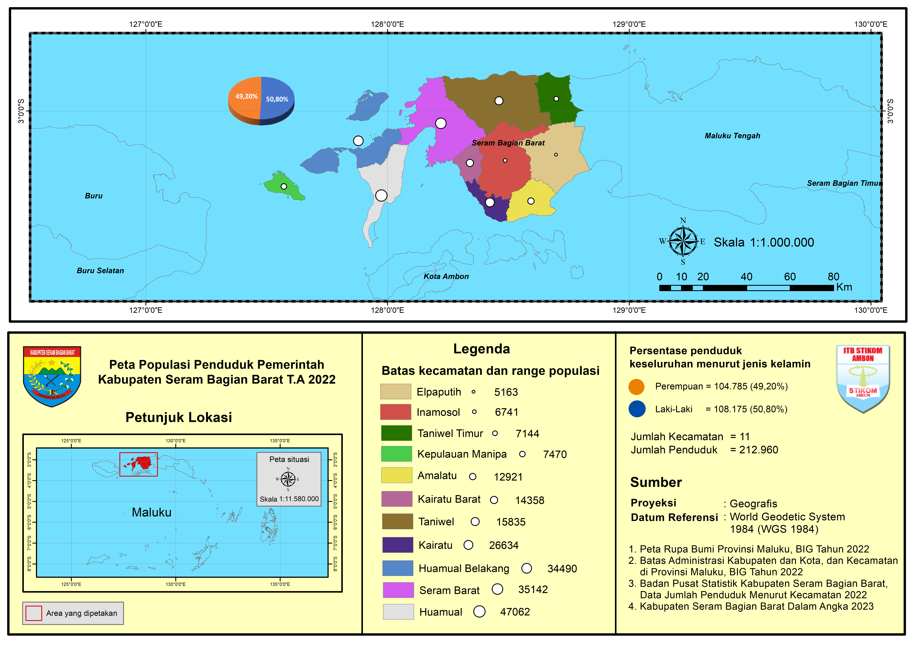
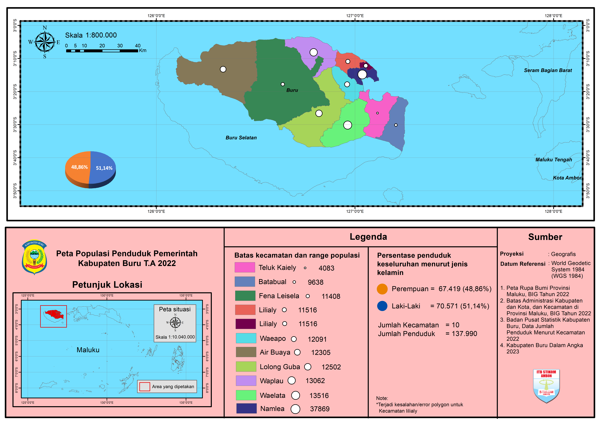

Assalamualaikum Warahmatullahi Wabarakatuh dan selamat pagi, siang, sore, malam.
Website ini merupakan website presentasi tugas akhir matakuliah Sistem Informasi Geografis (SIG) yang diajarkan oleh dosen tercinta kami, Ibu Ni Luh Suciartini (maaf jika ada salah pengejaan ibu).
Tema Besar kami yaitu "Kajian Holistik Peta Tematik Persebaran Tingkat Populasi Penduduk Kabupaten dan Kota di Provinsi Maluku". Perlu diingat bahwa data yang kami sajikan merupakan data update terakhir di tahun 2022 dari berbagai sumber, namun sebagian besar dari website Badan Pusat Statistik (BPS) Maluku, baik Kabupaten maupun Kota. Sedangkan data pemetaan kami ambil dari website Indonesia Geospatial Portal dan Lapak GIS.
- Adapun nama-nama anggota tim kami, yaitu:
- 1. Chairil Ali
- 2. Nana Jayani Rumauw
- 3. Sumiati Mahu
- 4. Ayu Sabban
- 5. Ismawati Marasabessy
- 6. Risma Adinda Sakinah
- 7. Friske Lakoruhut
- 8. Muh. Fausan
- 9. Irfan Pattinasarany
- 10.Samrah Daeng Makase
Apa itu kajian Holistik?
Kajian Holistik adalah cara pandang yang menyeluruh atau secara keseluruhan sebagai satu kesatuan.
Apa itu Peta Tematik?
Peta Tematik adalah jenis peta yang menggambarkan data atau informasi spesifik terkait dengan suatu tema atau topik tertentu di wilayah geografis tertentu.
Provinsi Maluku
Provinsi Maluku merupakan salah satu provinsi yang terletak di Kawasan Timur Indonesia. Menurut letak astronomis, maka wilayah Provinsi Maluku terletak antara 20o30' - 9oLintang Selatan dan 124o - 136o Bujur Timur. Luas wilayah Provinsi Maluku secara keseluruhan adalah 46.150,92 km.
Provinsi Maluku terdiri dari 559 pulau. Pulau yang terluas adalah pulau Seram dengan luas 18.625 km.
Data luas wilayah administrasi dan jumlah pulau

Lanjutan

Secara administratif, Maluku terbagi atas 9 kabupaten dan 2 kota yang membawahi 118 kecamatan. Pada tingkatan yang lebih rendah, terdapat 1.198 desa dan 35 kelurahan. Kabupaten Maluku Tengah tercatat sebagai kabupaten dengan jumlah kecamatan terbanyak sebanyak 18 kecamatan, sedangkan untuk jumlah desa/kelurahan terbanyak tercatat di Kabupaten Seram Bagian Timur dengan 198 desa/kelurahan.
Data wilayah administrasi


Jumlah penduduk Maluku pada tahun 2022 berdasarkan proyeksi Sensus Penduduk Maluku tercatat sebanyak 1.881.727 jiwa. Jumlah penduduk tersebut mengalami kenaikan sekitar 0,02 juta jiwa bila dibandingkan dengan jumlah penduduk tahun 2021 yang mencapai 1,863 juta jiwa. Bila dibandingkan dengan dua belas tahun sebelumnya, jumlah penduduk Maluku saat ini mengalami peningkatan sekitar 22,88 persen dari jumlah penduduk pada waktu pelaksanaan Sensus Penduduk tahun 2010 yang sebesar 1,53 juta jiwa. Dengan kata lain, selama kurun waktu sepuluh tahun terakhir jumlah penduduk Maluku telah mengalami pertambahan penduduk sebesar 0,35 juta jiwa, dengan kepadatan penduduk sebanyak 41 jiwa/km².
Data indikator kependudukan

Data jumlah penduduk

Data laju pertumbuhan penduduk pertahun (Metode Geometrik)

Data distribusi persentase penduduk

Data kepadatan penduduk per kilometer

Data jumlah penduduk menurut kelompok umur dan jenis kelamin
Data jumlah penduduk angkatan kerja

Data jumlah penduduk bukan angkatan kerja

Data jumlah penduduk angkatan kerja dan bukan angkatan kerja menurut jenis kelamin

Data jumlah penduduk yang bekerja pada lapangan pekerjaan utama

Data jumlah penduduk yang bekerja pada lapangan pekerjaan utama menurut jenis kelamin

Data jumlah penduduk yang bekerja menurut jumlah jam kerja pada pekerjaan utama berdasarkan jenis kelamin


Data perbandingan persentase dan jumlah penduduk miskin

Lanjutan

Data perbandingan jumlah penduduk menurut provinsi di Indonesia

Lanjutan

Data perbandingan jumlah penduduk miskin menurut provinsi di Indonesia

lanjutan

Peta kota Ambon

Kota Ambon merupakan ibukota Provinsi Maluku, yang secara geografis terletak pada posisi 3o34’4,80’’-3o47’38,4’’ Lintang Selatan dan 128o1’33,6’’-128o18’7,20’’ Bujur Timur. Di sebelah selatan, Kota Ambon berbatasan langsung dengan Laut Banda, dan di bagian lainnya berbatasan dengan Kabupaten Maluku Tengah.
Kota Ambon memiliki 5 (lima) kecamatan, yaitu Kecamatan Nusaniwe, Kecamatan Sirimau, Kecamatan Teluk Ambon Baguala, Kecamatan Teluk Ambon, dan Kecamatan Leitimur Selatan. Diantara lima kecamatan tersebut, Kecamatan Teluk Ambon merupakan kecamatan dengan wilayah yang paling luas, yaitu sebesar 93,68 km2, atau sekitar 26 persen dari total luas wilayah Kota Ambon dan kecamatan luas terkecil yaitu Teluk Ambon Baguala, yaitu sebesar 40,11 km2, atau sekitar 11 persen.
Data luas daerah dan jumlah pulau

Lanjutan

Data persentase luas wilayah

Secara administratif, wilayah Kota Ambon terbagi menjadi lima kecamatan dengan 50(lima puluh) desa/kelurahan, dimana 26(dua enam) persen desa/kelurahan diantaranya berada di Kecamatan Nusaniwe. Dari 50(lima puluh) desa/kelurahan tersebut, terdapat 39 desa/kelurahan yang dikategorikan sebagai perkotaan, sedangkan 11(sebelas) desa/kelurahan lainnya dikategorikan sebagai pedesaan.
Data jumlah desa atau kelurahan

Berdasarkan hasil proyeksi Sensus Penduduk, diketahui bahwa pada tahun 2022 Kota Ambon memiliki lebih dari 347 ribu penduduk, dengan rata-rata laju pertumbuhan penduduk per tahunnya adalah 0,27 persen.
Rata-rata setiap satu kilometer persegi di Kota Ambon dihuni oleh sekitar 969 orang penduduk. Sedangkan di Kecamatan Leitimur Selatan yang memiliki jumlah penduduk paling sedikit, hanya dihuni oleh rata-rata sekitar 191 orang penduduk per satu kilometer persegi
Data jumlah penduduk kota Ambon menurut kecamatan

Data jumlah dan kepadatan penduduk

Data piramida penduduk menurut kelompok umur dan jenis kelamin

Data penduduk lanjutan

Data penduduk yang bekerja berdasarkan status pekerjaan utama dan jenis kelamin

Data statistik ketenagakerjaan

Data garis kemiskinan, jumlah, dan persentase penduduk miskin

Data perbandingan jumlah penduduk kota Ambon dengan kabupaten/kota lain di provinsi Maluku

Data perbandingan jumlah penduduk miskin kota Ambon dengan kabupaten/kota lain di provinsi Maluku

Peta kota Tual

Kota Tual merupakan daerah pemekaran baru yang awalnya merupakan bagian dari Kabupaten Maluku Tenggara. Berdasarkan letak astronomis, Kota Tual terletak antara 5° sampai 6,5° Lintang Selatan dan 131° sampai 133,5° Bujur Timur.
Luas wilayah Kota Tual ± 19.342,39 km2, dengan luas daratan km2 dan luas perairannya ± 19.008 km2, yang terdiri dari 66 pulau dan meliputi 3 gugusan pulau. Berdasarkan topografi, Kota Tual merupakan dataran rendah dengan ketinggian ± 100 M di atas permukaan laut.
Data luas daerah dan jumlah pulau menurut kecamatan

Lanjutan

Berdasarkan hasil proyeksi penduduk, jumlah penduduk Kota Tual tahun 2022 meningkat menjadi 93.145 jiwa, dengan penduduk laki-laki sebanyak 46.472 jiwa dan penduduk perempuan sebanyak 46.673 jiwa dan kepadatan penduduk sebesar 366 jiwa/km2

Data Jumlah Penduduk Menurut Kelompok Umur dan Jenis Kelamin

Data Jumlah Penduduk Menurut Kecamatan dan Jenis Kelamin

Data jumlah penduduk angkatan kerja dan bukan angkatan kerja

Data Garis Kemiskinan, Jumlah, dan Persentase Penduduk Miskin

Jumlah Penduduk Kota Tual dengan Kabupaten/Kota lain di Provinsi Maluku

Jumlah Penduduk miskin Kota Tual dengan Kabupaten/Kota lain di Provinsi Maluku

Peta Kabupaten Maluku Barat Daya

Kabupaten Maluku Barat Daya menurut astronomi terletak antara 07°06’’55” Lintang Selatan dan 125°71’85” Bujur Timur. Berdasarkan posisi geografisnya, Kabupaten Maluku Barat Daya memiliki batas-batas: Utara: Laut Banda; Selatan: Laut Timor dan Selat Wetar; Barat: Kepulauan Alor; Timur: Kepulauan Tanimbar.
Luas wilayah Kabupaten Maluku Barat Daya adalah 72.411,15 km2 yang terdiri dari wilayah daratan seluas 8.633,15 km2 (11,92%) dan wilayah perairan seluas 63.778 km2 (88,08%).
Data persentase luas wilayah menurut kecamatan

Data luas daerah dan jumlah pulau menurut kecamatan

Lanjutan

Berdasarkan UU Nomor 31 Tahun 2008 tentang Pembentukan Kabupaten Maluku Barat Daya di Provinsi Maluku. Kabupaten Maluku Barat Daya terpisah dari Kabupaten Maluku Tenggara Barat dan menjadi daerah otonom setingkat kabupaten yang berhak mengelola tata pemerintahan sendiri.
Data jumlah desa/kelurahan menurut kecamatan

Pada tahun 2022 jumlah penduduk Kabupaten Maluku Barat Daya berdasarkan Dinas Dukcapil berjumlah 82.560 jiwa, dimana 42.276 jiwa diantaranya penduduk laki-laki dan 40.284 jiwa adalah penduduk perempuan.
Data statistik jumlah penduduk menurut kecamatan

Data jumlah penduduk menurut kelompok umur dan jenis kelamin

Data statistik kependudukan

Data jumlah penduduk angkatan kerja dan bukan angkatan kerja menurut jenis kelamin

Data garis kemiskinan, jumlah, dan presentase penduduk miskin

Data perbandingan jumlah penduduk Maluku Barat Daya dengan Kabupaten/Kota di Provinsi Maluku

Data perbandingan jumlah penduduk miskin Maluku Barat Daya dengan Kabupaten/Kota di Provinsi Maluku

Peta Kabupaten Maluku Tengah

Luas wilayah daratan Kabupaten Maluku Tengah adalah 11,595.97 km2 yang terdiri 18 kecamatan. Jika dibandingkan luas Kabupaten maka kecamatan yang memiliki wilayah terluas adalah Kecamatan Seram Utara sebesar 61,86 persen dan kecamatan terkecil adalah kecamatan Kota Masohi dengan luasnya hanya 0,32 persen dari luas wilayah kabupaten maluku tengah. Wilayah Kabupaten Maluku Tengah memiliki 49 pulau dengan pulau terbesar adalah pulau Seram.
Data Luas Daerah dan Jumlah Pulau Menurut Kecamatan

Lanjutan

Kabupaten Maluku Tengah terdiri dari 18 kecamatan dengan jumlah desa/kelurahan adalah 190 desa dan 6 kelurahan.

Berdasarkan hasil Proyeksi Penduduk tahun 2022, penduduk maluku tengah berjumlah 427.050 jiwa dengan penduduk terbanyaknya adalah kecamatan Salahutu, Leihitu dan Amahai. Kecamatan dengan kepadatan penduduk tertinggi adalah kota masohi yaitu 982 jiwa per km2
Jumlah angkatan kerja di kabupaten maluku tengah adalah 180.951 terdiri dari bekerja sebanyak 168.715 sedangkan yang menganggur sebanyak 12.236.
Data Penduduk, Laju Pertumbuhan Penduduk, Kepadatan Penduduk Menurut Kecamatan

Lanjutan

Data Jumlah Penduduk Menurut Kelompok Umur dan Jenis Kelamin

Data jumlah penduduk angkata kerja dan bukan angkatan kerja menurut jenis kelamin

Data Garis Kemiskinan, Jumlah, dan Persentase Penduduk Miskin

Data Perbandingan Jumlah Penduduk Maluku Tengah dengan Kabupaten/Kota di Provinsi Maluku

Data Perbandingan Jumlah Penduduk Miskin Maluku Tengah dengan Kabupaten/Kota di Provinsi Maluku

Peta Kabupaten Kepulauan Tanimbar

Luas wilayah Kabupaten Kepulauan Tanimbar keseluruhan adalah 52.995,20 km2 yang terdiri dari luas daratan 10.102,92 km2 (19,06%) dan luas lautan 42.892,28 km2 (80,94%). Kecamatan yang memiliki luas wilayah terbesar adalah Kecamatan Wermaktian dengan luas darat sebesar 2.941,16 km2 atau 29,11 persen dari luas daratan Kabupaten Kepulauan Tanimbar.
Data Luas Daerah dan Jumlah Pulau Menurut Kecamatan

Lanjutan

Luas wilayah dan jumlah pulau Kecamatan Wuarlabobar termasuk Kecamatan Molu Maru.
Sejak tahun 2015, jumlah kecamatan di Kepulauan Tanimbar ada 11. Dari 11 kecamatan tersebut kecamatan Tanimbar Selatan memiliki jumlah desa terbanyak yaitu 14 desa. Kecamatan dengan jumlah desa paling sedikit adalah kecamatan Molu Maru dan Nirunmas dengan jumlah 5 desa. Selama tahun 2022 tidak ada pemekaran wilayah di Kabupaten Kepulauan Tanimbar baik desa maupun kecamatan.
Data Jumlah Desa /Kelurahan Menurut Kecamatan

Berdasarkan hasil dari Proyeksi Jumlah Penduduk 2022, jumlah penduduk Kabupaten Kepulauan Tanimbar tahun 2022 sebanyak 124.787 jiwa, dengan penduduk laki-laki sebanyak 63.128 jiwa dan penduduk perempuan sebanyak 61.659 jiwa dan kepadatan penduduk sebesar 12 jiwa/km2.
Data Jumlah Penduduk, Laju Pertumbuhan Penduduk, Kepadatan Penduduk Menurut Kecamatan

Lanjutan

Data Jumlah Penduduk Menurut Kelompok Umur dan Jenis Kelamin

Data Penduduk yang Bekerja Menurut Status Pekerjaan Utama dan Jenis Kelamin

Data Garis Kemiskinan, Jumlah, dan Persentase Penduduk Miskin

Data perbandingan jumlah penduduk Kepulauan Tanimbar dengan Kabupaten/Kota di Provinsi Maluku

Data perbandingan jumlah penduduk miskin Kepulauan Tanimbar dengan Kabupaten/Kota di Provinsi Maluku

Peta Kabupaten Seram Bagian Barat
Kabupaten Seram Bagian Barat sebagai salah satu Kabupaten/Kota di Provinsi Maluku, letaknya diapit oleh Kabupaten Buru, Kota Ambon, dan Kabupaten Maluku Tengah. Letak astronomisnya antara : 1°19’ - 7°16’ Lintang Selatan dan 127°20’ – 129°10’ Bujur Timur. Luas wilayah Kabupaten Seram Bagian Barat sebesar 12,82 persen dari total luas Provinsi Maluku.
Data Luas Daerah dan Jumlah Pulau Menurut Kecamatan

Lanjutan

Kabupaten Seram Bagian Barat berdiri sejak tahun 2003, jumlah kecamatan di Kabupaten Seram Bagian Barat mengalami perubahan yang diakibatkan karena pemekaran. Pada tahun 2003 – 2009, hanya terdapat 4 kecamatan yang kemudian mekar menjadi 11 kecamatan pada tahun 2010. Pada Peraturan Daerah Kabupaten Seram Bagian Barat Nomor 11 Tahun 2019, telah ditetapkan bahwan jumlah desa di Kabupaten Seram Bagian Barat adalah 92 desa dan tidak mengalami perubahan hingga tahun 2022.
Data Jumlah Desa Menurut Kecamatan

Jumlah penduduk Kabupaten Seram Bagian Barat berdasarkan data dari Dinas Kependudukan dan Pencacatatan Sipil Kabupaten Seram Bagian Barat, yaitu sebesar 212.960 jiwa pada tahun 2022. Dimana jumlah penduduk terbesar ada di kecamatan Huamual sebesar 22,10%
Laju pertumbuhan penduduk per tahun 2021-2022 adalah 1,2%. dimana laju pertumbuhan penduduk terbesar ada di kecamatan Inamosol yaitu sebesar 1,9%.
Data Penduduk, Laju Pertumbuhan Penduduk, Kepadatan Penduduk Menurut Kecamatan

Lanjutan

Data Jumlah Penduduk Menurut Kelompok Umur dan Jenis Kelamin

Data jumlah penduduk angkatan kerja dan bukan angkatan kerja menurut jenis kelamin

Data Garis Kemiskinan, Jumlah, dan Persentase Penduduk Miskin

Data perbandingan penduduk Seram Bagian Barat dengan Kabupaten/Kota di Provinsi Maluku

Data perbandingan penduduk miskin Seram Bagian Barat dengan Kabupaten/Kota di Provinsi Maluku

Peta Kabupaten Maluku Tenggara

Secara Astronomis, Kabupaten Maluku Tenggara terletak antara 5°12’ 19,427” – 6°6’18,275” Lintang Selatan dan 132° 21’ 39,082” – 133° 15’ 31,442” Bujur Timur.
Data Luas Daerah dan Jumlah Pulau Menurut Kecamatan

Lanjutan

Sejak tahun 2015, jumlah kecamatan di Maluku Tenggara ada 11. Dari 11 kecamatan tersebut kecamatan Kei Besar memiliki jumlah desa terbanyak yaitu 37 desa. Kecamatan dengan jumlah desa paling sedikit adalah kecamatan Manyeuw dengan jumlah desa 9. Selama tahun 2022 tidak ada pemekaran wilayah di Kabupaten Maluku Tenggara baik desa maupun kecamatan.
Data Jumlah Desa/Kelurahan Menurut Kecamatan

jumlah penduduk Kabupaten Maluku Tenggara tahun 2022 sebanyak 124.199 jiwa, dengan penduduk laki-laki sebanyak 61.780 jiwa dan penduduk perempuan sebanyak 62.419 jiwa dan kepadatan penduduk sebesar 120 jiwa/km2 .
Data Penduduk, Laju Pertumbuhan Penduduk, Kepadatan Penduduk Menurut Kecamatan.

Lanjutan

Data Jumlah Penduduk Menurut Kelompok Umur dan Jenis Kelamin

Data jumlah penduduk angkatan kerja dan bukan angkatan kerja menurut jenis kelamin

Data Garis Kemiskinan, Jumlah, dan Persentase Penduduk Miskin

Data perbandingan jumlah penduduk Maluku Tenggara dengan Kabupaten/Kota di Provinsi Maluku

Data perbandingan jumlah penduduk Maluku Tenggara dengan Kabupaten/Kota di Provinsi Maluku

Peta Kabupaten Kepulauan Aru

Kabupaten Kepulauan Aru menurut Astronomi terletak antara 5° sampai 8° Lintang Selatan dan 133°5’ sampai 136°5’ Bujur Timur. Sedangkan secara geografis memiliki batas wilayah sebelah selatan laut arafura, sebelah utara provinsi papua, sebelah timur provinsi papua, sebelah barat pulau kei besar kabupaten maluku tenggara
Data Luas Daerah dan Jumlah Pulau Menurut Kecamatan

Lanjutan

Sejak tahun 2016, jumlah kecamatan di Kepulauan Aru ada 10. Dari 10 kecamatan tersebut Kecamatan Aru Tengah memiliki jumlah desa terbanyak yaitu 22 desa. Kecamatan dengan jumlah desa paling sedikit adalah kecamatan Aru Tengah Selatan dan Aru Selatan Utara dengan jumlah desa 7. Selama tahun 2022 tidak ada pemekaran wilayah di Kabupaten Kepulauan Aru baik desa maupun kecamatan.
Data Jumlah Desa/Kelurahan Menurut Kecamatan

Berdasarkan hasil dari registrasi penduduk 2022, jumlah penduduk Kabupaten Kepulauan Aru tahun 2022 yaitu sebanyak 103.860 jiwa, dengan Kecamatan Pulau-Pulau Aru memiliki jumlah penduduk terbanyak yaitu sebanyak 50.302 jiwa dan Kecamatan Sir-Sir memiliki jumlah penduduk paling sedikit yaitu sebanyak 3.254 jiwa. Kepadatan penduduk Kabupaten Kepulauan Aru sebesar 7 jiwa/km2.
Data Penduduk, Laju Pertumbuhan Penduduk per Tahun, Kepadatan Penduduk Menurut Kecamatan

Lanjutan

Data Jumlah Penduduk Menurut Kelompok Umur dan Jenis Kelamin

Data Penduduk yang Bekerja Menurut Status Pekerjaan Utama dan Jenis Kelamin

Data Garis Kemiskinan, Jumlah, dan Persentase Penduduk Miskin

Data perbandingan penduduk Kepulauan Aru dengan Kabupaten/Kota di Provinsi Maluku

Data perbandingan penduduk miskin Kepulauan Aru dengan Kabupaten/Kota di Provinsi Maluku

Peta Kabupaten Buru Selatan

Buru Selatan adalah salah satu kabupaten di Provinsi Maluku. Secara geografis, wilayah Kabupaten Buru Selatan bagian utara berbatasan dengan Laut Seram, bagian timur berbatasan dengan Kabupaten Buru, bagian selatan dan barat berbatasan dengan Laut Banda.
Secara astronomis, Buru Selatan terletak antara 2°30’ - dan 5°50’ Lintang Selatan dan 125°00’ - 127°00’ Bujur Timur. Kabupaten ini memiliki luas daratan 5.060 km2 dengan ketinggian ibukota kabupaten (Namrole) 24 Meter di atas permukaan laut.
Data Luas Daerah dan Jumlah Pulau Menurut Kecamatan

Lanjutan

Kabupaten Buru Selatan merupakan kabupaten baru hasil pemekaran wilayah kabupaten Buru Selatan pada bulan oktober 2008 yang terdiri atas 5 (lima) kecamatan dengan jumlah desa sebanyak 55 desa.
Pada akhir tahun 2013 Kabupaten Buru Selatan mekar menjadi 6 (enam) kecamatan. Keenam kecamatan ini terbagi dalam 81 desa. Kecamatan tersebut adalah kecamatan Kepala Madan (16 desa), kecamatan Leksula (19 desa), Kecamatan Fena Fafan (11 desa), Kecamatan Namrole (17 desa), kecamatan Waesama (11 desa), serta kecamatan Ambalau (7 desa).
Data Jumlah Desa Menurut Kecamatan

Buru Selatan di Tahun 2022 memiliki total jumlah penduduk sebesar 78.099 jiwa dengan luas wilayah 5.060 km2. Sehingga kepadatan penduduk Buru Selatan tahun 2022 adalah 15 jiwa per km2. Kepadatan penduduk antar kecamatan cukup beragam dengan rentang 7 sampai 68 jiwa per km2.
Data indikator penduduk

Data jumlah penduduk angkatan kerja dan bukan angkatan kerja menurut jenis kelamin

Data Garis Kemiskinan, Jumlah, dan Persentase Penduduk Miskin

Data perbandingan penduduk Kabupaten Buru Selatan dengan Kabupaten/Kota di Provinsi Maluku

Data perbandingan penduduk miskin Kabupaten Buru Selatan dengan Kabupaten/Kota di Provinsi Maluku

Peta Kabupaten Buru
Wilayah Administrasi Kabupaten Buru adalah berupa daratan seluas 7.595,58 km². Kabupaten Buru terdiri dari 10 wilayah kecamatan dengan luas wilayah masing-masing kecamatan yaitu: Namlea (951.15 km²), Waeapo (102.50 km²), Waplau (585.23 km²), Bata Bual (108.60 km²), Teluk Kaiely (141.08 km²), Waelata (234.50 km²), Lolong Guba (457.02 km²), Lilialy (481.50 km²), Airbuaya (1702.35 km²) serta Fena Leisela (2831.65 km²).
Data Luas Daerah dan Jumlah Pulau Menurut Kecamatan

Lanjutan

Kabupaten Buru resmi menjadi sebuah kabupaten yang otonom pada tanggal 12 Oktober 1999 berdasarkan Undang-Undang Nomor 46 Tahun 1999 tentang Pembentukan Propinsi Maluku Utara, Kabupaten Buru dan Kabupaten Maluku Tenggara Barat, yang telah diperbaharui dengan Undang-Undang Nomor 6 Tahun 2000. Wilayah pemerintahan Kabupaten Buru mencakup 10 kecamatan.
Kemudian, melalui Undang Undang Nomor 32 Tahun 2008, Kabupaten Buru dimekarkan menjadi dua kabupaten yang otonom yakni Kabupaten Buru dan Kabupaten Buru Selatan.
Data Jumlah Desa Menurut Kecamatan

Jumlah Penduduk Kabupaten Buru berdasarkan data hasil proyeksi berjumlah 137.990 jiwa yang terdiri dari 70.571 jiwa laki-laki dan 67.419 jiwa perempuan.
Kepadatan penduduk di Kabupaten Buru mencapai 18 jiwa/km2 . Kepadatan penduduk tertinggi terjadi di Kecamatan Waeapo yakni 117 jiwa/km2 dan terendah berada di Kecamatan Fena Leisela yakni 4 jiwa/km2.
Data Penduduk, Laju Pertumbuhan Penduduk, Kepadatan Penduduk menurut Kecamatan

Lanjutan

Data Jumlah Penduduk Menurut Kelompok Umur dan Jenis Kelamin

Data jumlah penduduk angkatan kerja dan bukan angkatan kerja menurut jenis kelamin

Data Garis Kemiskinan, Jumlah, dan Persentase Penduduk Miskin

Data perbandingan penduduk Kabupaten Buru dengan Kabupaten/Kota di Provinsi Maluku

Data perbandingan penduduk miskin Kabupaten Buru dengan Kabupaten/Kota di Provinsi Maluku

Peta Kabupaten Seram Bagian Timur

Kabupaten Seram Bagian Timur sebagian besar terletak di wilayah Pulau Seram. Kabupaten yang berdiri sejak tahun 2003 ini, pemekaran dari Kabupaten Maluku Tengah, secara geografis terletak antara: 129°50’00’’ – 131°50’00’’ Bujur Timur dan 02°50’00’’ – 04°50’00’’ Lintang Selatan. Kabupaten Seram Bagian Timur dibatasi oleh Laut Banda Seram di sebelah Utara, Laut Banda di sebelah Selatan, Laut Arafuru di sebelah Timur, dan Kabupaten Maluku Tengah di sebelah Barat.
Kabupaten Seram Bagian Timur merupakan kabupaten bahari dengan luas laut mencapai 14.877,771 km2. Wilayah daratan seluas 5.779,123 km2 terdiri dari dataran Bula, Bula Barat, Teluk Waru, Tutuk Tolu, Kian Darat, Kilmury, Werinama dan Siwalalat yang berada di Pulau Seram dan pulau-pulau terpisah sebanyak 49 pulau.
Data Luas Daerah dan Jumlah Pulau Menurut Kecamatan

Lanjutan

Kabupaten Seram Bagian Timur sebelumnya merupakan bagian dari Kabupaten Maluku Tengah. Kemudian, melalui Undang-undang Nomor 40 Tahun 2003, Seram Bagian Timur dimekarkan menjadi sebuah kabupaten yang otonom. Sejak berdirinya, Kabupaten Seram Bagian Timur telah terjadi perkembangan yang cukup signifikan dalam bidang pemerintahan, dimana pada awalnya terdiri dari 4 (empat) Kecamatan.
Pada tahun 2010 terjadi pemekaran wilayah di Kabupaten Seram Bagian Timur, yang semula 4 Kecamatan kemudian terjadi pemekaran 6 kecamatan. Pada tahun 2012 terjadi pemekaran lagi sehingga jumlah kecamatan menjadi 12 kecamatan. Kemudian pada tahun 2014, wilayah Seram Bagian Timur mengalami pemekaran kecamatan kembali menjadi 15 kecamatan.
Data Jumlah Desa Menurut Kecamatan

Berdasarkan hasil proyeksi Sensus Penduduk, diketahui bahwa pada tahun 2022 Kabupaten Seram Bagian Timur memiliki lebih dari 143 ribu penduduk, dengan rata-rata laju pertumbuhan penduduk per tahunnya adalah 2,24%.
Data Statistik Kependudukan

Data Persentase Kependudukan

Data jumlah penduduk yang bekerja menurut status pekerjaan utama dan jenis kelamin

Data Garis Kemiskinan, Jumlah, dan Persentase Penduduk Miskin

Data perbandingan jumlah penduduk Kabupaten Seram Bagian Timur dengan Kabupaten/Kota di Provinsi Maluku

Data perbandingan jumlah penduduk miskin Kabupaten Seram Bagian Timur dengan Kabupaten/Kota di Provinsi Maluku

Does anyone have any questions?
Thank You 😊
Tim ArcGIS - SI7D